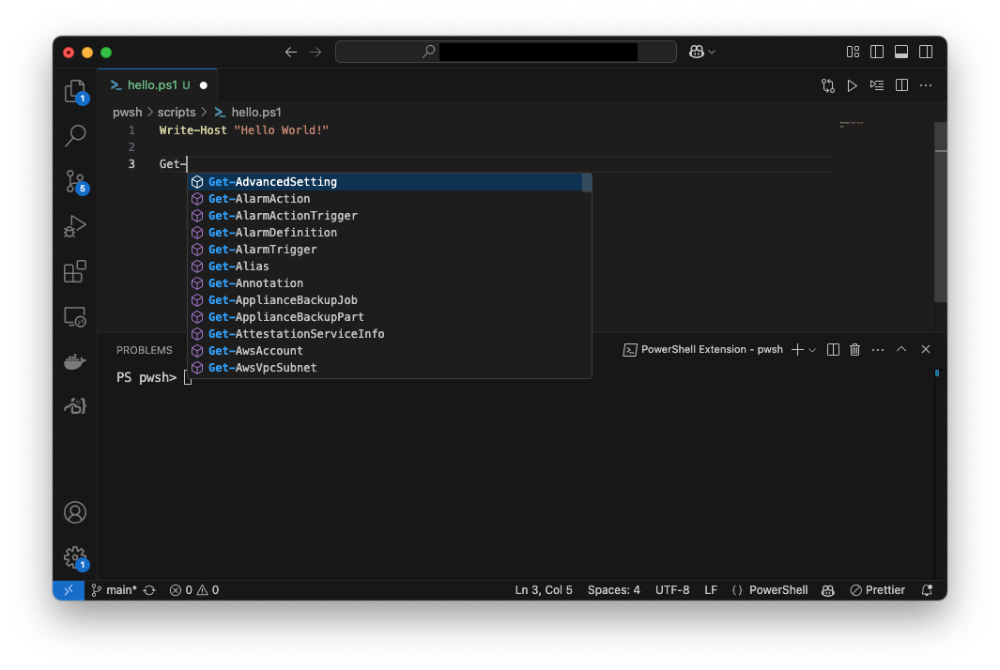

🎆 Strontium
Tärpit
Format Operator
Löydät tästä lisätietoa about_Operators-dokumentaatiosta. Alla lyhyt käyttöohje:
$a = 42
$b = "The Universe"
$c = "Life"
$d = "Everything"
# Tulostaessa tarvit sulut
Write-Host ("The answer to {0}, {1}, and {2} is: {3}" -f $c, $b, $d, $a)
Mukavuus
Visual Studio Coden käyttö
Warning
Mukavuus-otsikon alla on oletus, että sinulla on käytössä Visual Studio Code, PowerShell Extension ja lokaalisti asennettu PowerShell.
Bash-kielessä on hyvin pieni määrä sisäänrakennettuja komentoja, joten kyseistä kieltä kirjoittaa melko kevyesti ilman code autocompletion ominaisuutta. PowerShellin kanssa tätä kannattaa opetella hyödyntämään. Voit lukea lisää VS Code: IntelliSense-dokumentaatiosta.

Kuva 1: Kun kirjoitat Get-, aukeaa valikko, josta voit valita haluamasi cmdletin. PowerShell Extensionin käyttö nopeuttaa kirjoittamista ja vähentää virheitä.
Muita hyödyllisiä pikaneuvoja ovat:
- F8 : Aja maalattu osa komentoa VS Code Terminalissa (ei kontissa!)
- F1 : Avaa komentopaneeli.
- Kirjoita hakukenttään
PowerShellja katso mitä kaikkea löydät.
- Kirjoita hakukenttään
- Ctrl+, : Avaa asetukset.
- Kirjoita hakukenttään
@ext:ms-vscode.powershellja saat esille kaikki PowerShell Extensionin asetukset. (🍎 Mac: Cmd+,:)
- Kirjoita hakukenttään
PowerShell Extensionin asetuksiin pääset painamalla Ctrl+, ja kirjoittamalla hakukenttään PowerShell. Täältä löydät kaikki asetukset, joita voit muokata.
Promptin muokkaus
Jos/kun käytät lokaalia PowerShelliä syntax highlightingin toimivuuden takaamiseksi tai ympäristöä muokkaamattomien srkriptien ajamiseksi, olet varmasti huomannut, että prompt on tyypillisesti melko pitkä. Se on esimerkiksi:
Eikö olisi mukavampaa, jos prompt olisi:
Bashistä sinulle pitäisi olla tuttua Start-up -tiedosto .bashrc ja ympäristömuuttuja PS1, joka säätää sinun promptiasi. PowerShellissä hitusen vastaava tiedosto on profiilitiedosto, jonka sijainti sinulle selviää komennolla:
PS> $profile
# tai ks. kaikki
PS> $profile | Select-Object *
# avaa haluamasi VS Codessa
PS> code $profile.CurrentUserAllHosts
# kun olet muokannut, käynnistä joko shell tai sourcea profiilitiedosto
PS> . $profile.CurrentUserAllHosts
Promptin muotoilusta vastaa funktio prompt. Voit ylikirjoittaa tämän funktion yhden istunnon ajaksi terminaalissa. Pysyvämpi muutos syntyy muokkaamalla profiilitiedostoa, koska se ladataan joka kerta PowerShellin käynnistyessä. Tutustu tähän liittyviin helppeihin (about_Prompts, about_Profiles).
function prompt {
switch ((Get-Location).Provider.Name) {
FileSystem { $p = Split-Path -leaf -path (Get-Location) }
Default { $p = (Get-Location).Drive.Name }
}
"PS $p> "
}
Pyörää ei kannata keksiä uusiksi. Yllä oleva prompt on muokattu superuser: Configure Windows PowerShell to display only the current folder name in the shell prompt-keskustelun vastauksista. Vaihtoehtoinen tapa olisi käyttää valmiita teemoja esimerkiksi oh-my-posh:n avulla.
Warning
Muista, että sinun on pitänyt ajaa /app/scripts/localhelp.ps1, joka lataa koneelle tallennetun helpin, tai komento Update-Help, joka lataa helpin netistä, jotta help oikeasti sisältää jotakin. Vaihtoehto on toki lukea esimerkiksi about_Prompts verkosta.
Tehtävät
Tehtävä: Arvaa numero
Luo ohjelma, joka generoi luvun väliltä 1-1000 ja pyytää käyttäjää arvaamaan sen. Ohjelma antaa vihjeen, onko arvattu luku suurempi vai pienempi kuin generoitu luku. Ohjelma lopettaa, kun käyttäjä arvaa oikein. Tämä on jo kerran tehty Bashilla, joten voit käyttää sitä pohjana logiikan suhteen.
Lisää ohjelmaan ominaisuus, että se kellottaa käyttäjän peliajan ja tulostaa sen lopuksi ruudulle. Pelatessa tulosteen pitäisi myötäillä alla olevaa esimerkkiä:
Arvaa luku väliltä 1-1000
=================================================
Arvaa luku: 369
📉 Liian pieni
Arvaa luku: 371
📈 Liian suuri
Arvaa luku: 370
🎉 Oikein! Arvasit luvun 370
Peliaika: 00:00:10.1029581
Varmista, että pelaaja voi halutessaan lopettaa pelin. Minun toteutuksessa mikä tahansa muu syöte kuin kokonaisluvuksi parsittava syöte lopettaa pelin (esim. exit tai tyhjä merkkijono).
Vihje
Peliajan kellottamiseen voit käyttää System.Diagnostics.Stopwatch-luokkaa. Ohje löytyy PowerShell Communityn DevBlogs: Measuring average download time -artikkelista.
Tehtävä: Reminder
Aivan kuten ylempi, myös tämä tehtävä on sinulle tuttu Bash-osiosta. Luo kaksi ohjelmaa, jotka toimivat yhdessä. Toinen luo, toinen näyttää muistiinpanoja.
install_remind.ps1- Luo aliakset
remindjaremember, jotka suorittavatremind.ps1- jaremember.ps1-skriptit.
- Luo aliakset
remember- Kysyy käyttäjältä muistutuksia, jotka tallennetaan
$HOME/.reminder-tiedostoon. - Tyhjä syöte lopettaa muistutusten kirjoittamisen.
- Formaatti:
[timestamp] Muistutus
- Kysyy käyttäjältä muistutuksia, jotka tallennetaan
reminder- Tulostaa koko muistutustiedoston sisällön.
Alla esimerkki asennuksen ja kummankin sovelluksen toiminnasta. Komentojen väliin on lisätty tyhjä rivi lukemisen helpottamiseksi:
PS /> . /app/scripts/remind_install.ps1
PS /> remember
Enter note (quit with empty note)
>>> : Buy an egg
>>> : Buy a chicken
>>> : Which one first? Help!
>>> :
PS /> remind
Your reminders are as follows:
[1739541147] Buy an egg
[1739541151] Buy a chicken
[1739541156] Which one first? Help!
Tehtävä: Verb-Noun generaattori
Kehitä generaattori, rnd-cmdlet.ps1, joka luo uudenlaisia cmdlet-päteviä nimiä, kuten Get-Pizza tai Set-Spam. Tee ohjelma siten, että, verbi arvotaan PowerShellin käytössä olevista verbeistä. Substantiivi sen sijaan noudattaa seuraavaa logiikkaa:
- Jos käyttäjä antaa argumentin skriptille, käytä sitä.
- Jos ei, yritä noutaa substantiivi REST API:sta.
- Osoite:
https://random-word-api.herokuapp.com/word
- Osoite:
- Jos ei onnistu, poimi satunnainen sana sanakirjasta.
REST API:n kutsumiseen saat apua alemmasta vinkistä, jos et itse keksi ratkaisua.
Jos tarvitset helpomman tehtävän
Vinkki Verbi
Kokeile komentoa Get-Verb.
Vinkki REST API
function getNoun {
try {
$url = "https://random-word-api.herokuapp.com/word"
$response = Invoke-RestMethod -Uri $url -Method Get
$noun = (Get-Culture).TextInfo.ToTitleCase($response[0])
}
catch {
Write-Warning "Using a predefined list."
$noun = Get-Random -InputObject $nounVocabulary
}
return $noun
}
Tehtävä: Staattinen analyysi (PSScriptAnalyzer)
Bashin kanssa käytimme ohjelmaa shellcheck, joka analysoi skriptin ja antaa palautetta mahdollisista virheistä. PowerShellille vastaava työkalu on PSScriptAnalyzer. Sen pitäisi olla asennettuna ja aktiivsena, mutta voit tarkistaa, löytyykö se Get-Module cmdletillä:
Jos ei ole:
Tämän jälkeen tarkista skriptisi:
Korjaa kaikki virheet ja varoitukset. Jos jokin virhe toistuu useita kertoja, harkitse Find & Replace -toiminnon käyttöä Visual Studio Codessa. Ole kuitenkin varovainen, ettet korvaa jotain, mitä et halua korvata!
Tip
Saatat huomata varoituksia, joiden kuvaus on: Missing BOM encoding for non-ASCII encoded file 'some_file.ps1.
Nämä liittyvät Windows PowerShell -yhteensopivuuteen. Tällä kurssilla helpoin tapa sivuuttaa ongelma on hiljentää nämä varoitukset. Tämä onnistuu helpoiten luomalla seuraava tiedosto skriptihakemistoon:
Huomaa, että tiedoston nimen tulee olla juurikin tuo sama. Muutoin Invoke-ScriptAnalyzer ei osaa etsiä sitä.